Results 概览
这一页回答「我们实际测到了什么」。四节结果按安装顺序排列：底盘改造、受体构建、接口改造、报告体系；每节先给数据，再写这些数据能支持到哪一步。
四个模块的技术栈彼此独立：底盘用 pML104 与同源臂修复模板，受体用 pGADT7 与 PAGER 融合受体，接口用 pRS426 与多片段融合 PCR，报告体系用 pESC-HIS 与 FUS1 启动子。唯一的公共项是底盘菌株 BY4741，以及作为诱导输入的 α-factor——但三套浓度体系并存，跨模块数值不能直接比大小。
边界说明：本页不写检测灵敏度、特异性、检出限与临床可用性，这些测量没有做过；不把方案预期写成实测结果。本页图片均来自实验记录中的图表与成像，导出格式的图片只作可视化呈现，不作为原始数据。
底盘酵母改造
一 pML104-sgRNA质粒构建
1.1 方案一：在载体上设计约25 bp引物，通过反向PCR线性化载体；同时在目的片段两端各引入20 bp与线性化载体匹配的同源序列，后续经一步克隆连接完成质粒构建。
1.1.1反向PCR扩增线性化
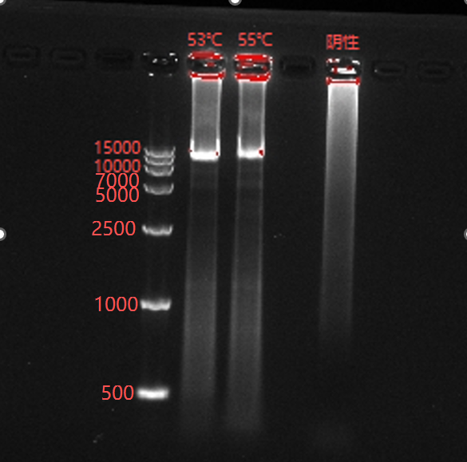
注：泳道2是退火温度为53℃时的PCR产物；泳道3是退火温度为55℃时的PCR产物；
如图所示，退火温度为53℃与55℃时扩增效果基本一致，均可见清晰的目标条带（约11209 bp）。然而，所有PCR产物（包括阴性对照）均出现明显弥散现象。结合后续更换水、模板及PCR Mix等试剂后该现象仍存在，可初步排除试剂污染因素，推测该弥散条带可能与引物设计有关。针对此问题，后续可通过扩大PCR反应体系，并结合切胶回收以去除弥散干扰，从而获得纯度较高的目标产物。
表1 方案一线性化载体直接纯化回收的浓度及纯度
1.1.2一步克隆及转化大肠杆菌
（1）一步克隆产物验证——PCR验证
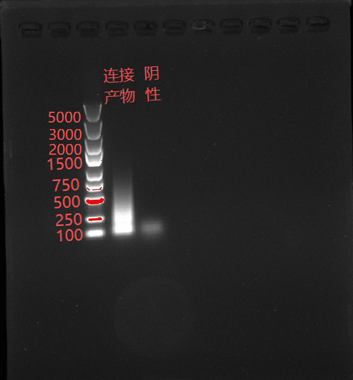
注：泳道2：一步克隆后PCR验证产物；泳道3：阴性；最终扩增的条带是400bp左右
如图所示，一步克隆连接产物经PCR验证后，在约250–500 bp之间（接近250 bp）出现一条清晰的主条带，阴性对照无对应明亮条带。该结果提示连接产物中可能存在目标片段，但条带位置偏低，其是否为预期的连接方式尚不能确定，需结合后续大肠杆菌转化实验，通过菌落PCR及测序进一步判断质粒是否成功环化及连接是否正确。
（2）一步克隆验证——大肠杆菌转化
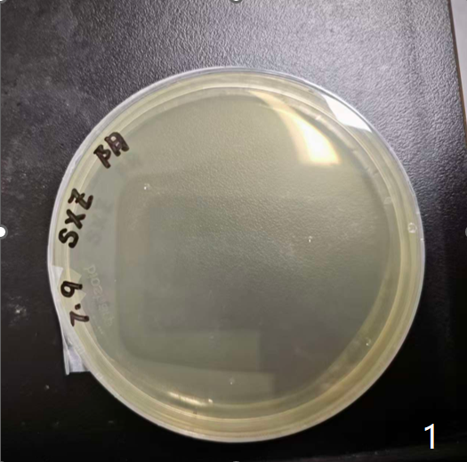
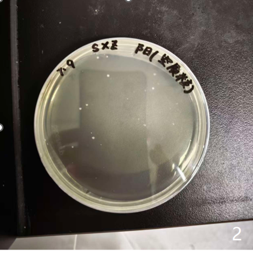
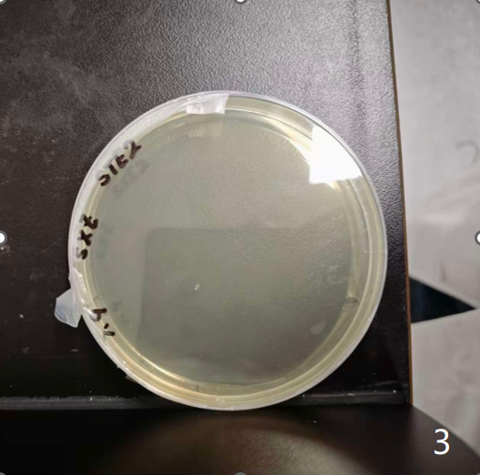
注：1号是阴性对照；2号是阳性对照（加入提取的pML104环化质粒）；3号是一步克隆连接产物
如图所示，阴性对照平板上无菌落生长，阳性对照平板上可见少量零星菌落（推测可能与加入质粒量过多、对感受态细胞产生一定抑制有关），表明感受态细胞活性正常，转化体系有效。而一步克隆连接产物转化后平板上无菌落生长，提示该连接产物未能成功环化或未形成可稳定复制的重组质粒，即一步克隆连接反应可能未成功。
由于方案一中线性化载体扩增不稳定，条带常偏离目标位置，且载体与目的片段间仅20 bp同源臂，一步克隆转化大肠杆菌始终未获成功，推测连接效率较低。因此后续改用方案二：直接在载体上引入目的片段，延长同源臂，连接环化时无需额外添加目的片段，线性化载体可自行环化，操作更为简便。
1.2 方案二：直接通过引物将目的片段（约33 bp）引入载体，两引物间含约20 bp重叠同源序列，经反向PCR扩增即获得携带目的片段的线性化载体，无需额外添加目的片段，直接一步克隆连接即可完成构建。
1.2.1反向PCR扩增线性化（携带33bp目的片段）
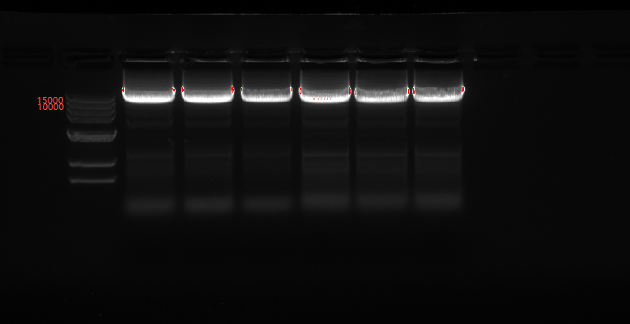
注：理论上扩增条带总长是11279bp
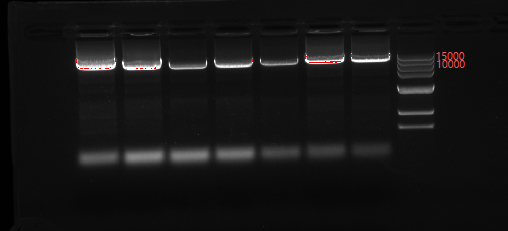
注：理论上扩增条带总长是11279bp
从图中可见清晰且明亮的目标条带，且条带位置与预期一致，说明线性化载体扩增成功。但与此同时，泳道中还存在非特异性扩增条带，可能会对后续实验造成干扰，因此后续需通过切胶回收对目标条带进行纯化。
表2 方案二线性化载体切胶回收的纯度与浓度
1.2.2一步克隆及转化大肠杆菌
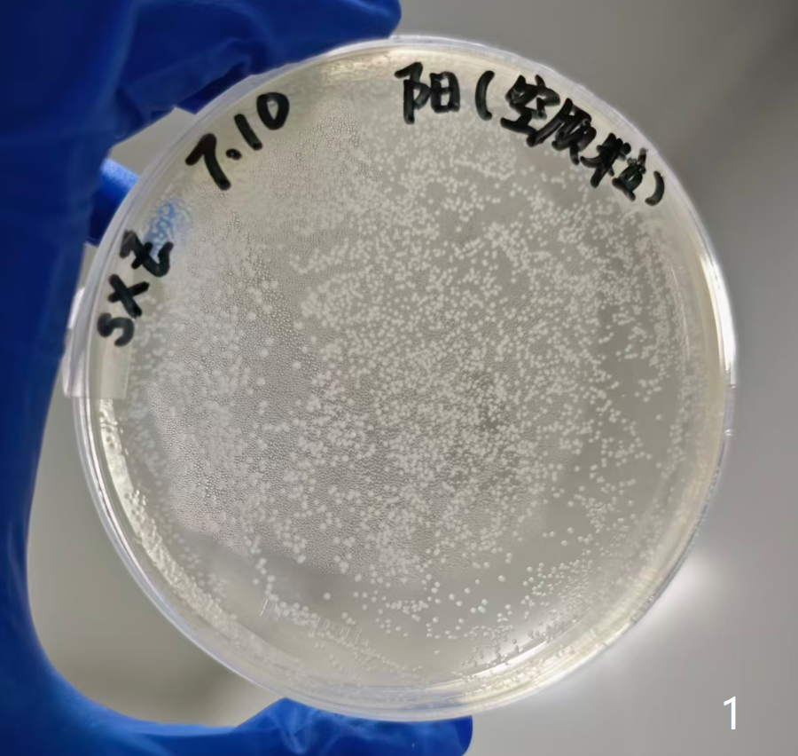
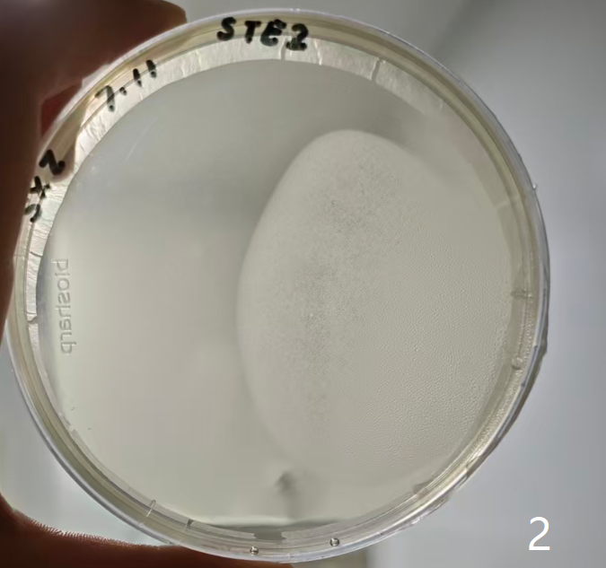
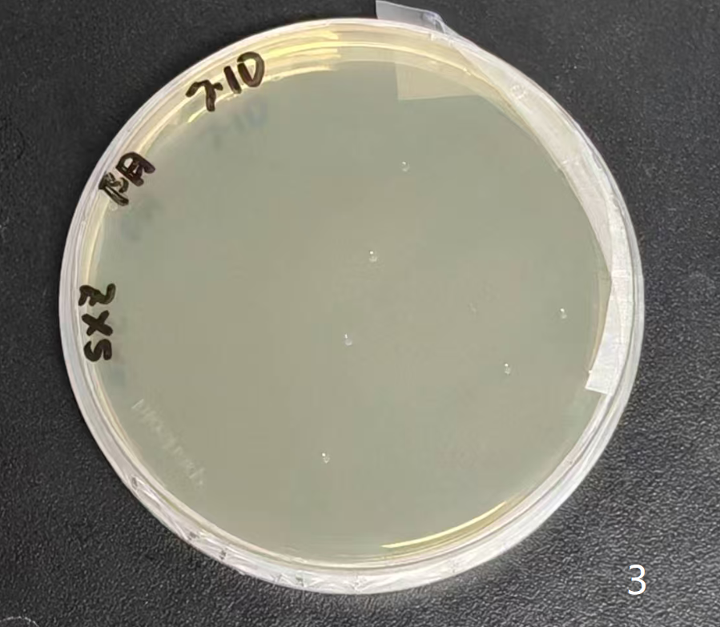
注：1号是阳性对照（转入≤50ng的pML104环状质粒）；2号是一步克隆连接产物（图中平板标注“STE2”为笔误，实际应为FAR1）；3号是阴性对照
阴性对照平板上无菌落生长，一步克隆连接产物转化后同样未长出菌落，而空质粒（阳性对照）平板上菌落生长密集，表明感受态细胞活性正常、转化体系有效。由此推测，一步克隆连接产物未能成功环化或未形成可稳定复制的重组质粒，即该连接反应未成功。
针对上述现象，考虑到一步克隆连接始终未能成功，遂尝试不再依赖体外连接，而是直接利用酿酒酵母自身的同源重组能力完成质粒环化。由于线性化载体本身已携带33 bp目的片段，故不再进行大肠杆菌转化，而是直接将线性化载体转入酿酒酵母中，若其能在酵母体内自行环化，则该pML104-sgRNA重组质粒即可在酿酒酵母体内定向切割目标靶点。
1.2.3酵母转化
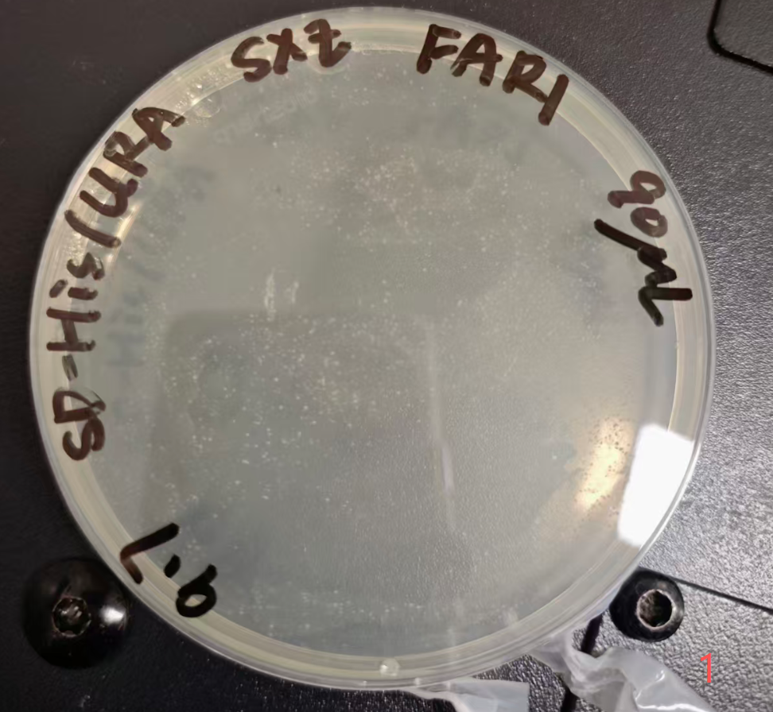
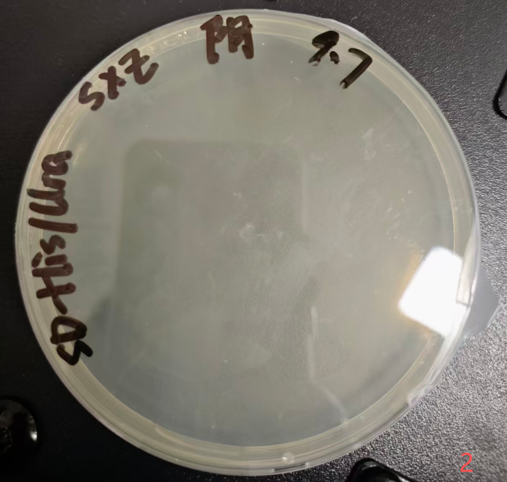
注：1号是pML104-sgRNA-FAR1线性化载体；2号是阴性对照
pML104-sgRNA-FAR1线性化载体直接转入酿酒酵母后，平板上长出大量菌落；阴性对照平板上无菌落生长。该结果初步表明，线性化载体可能在酿酒酵母体内利用自身同源重组能力完成环化，并成功转化入酵母细胞。
为获得FAR1与SST2双基因敲除菌株，在第一轮FAR1敲除完成后，利用5-FOA反筛去除携带URA3标记的sgRNA质粒，获得无质粒的FAR1敲除株；随后在此基础上转入针对SST2的CRISPR质粒，进行第二轮敲除。
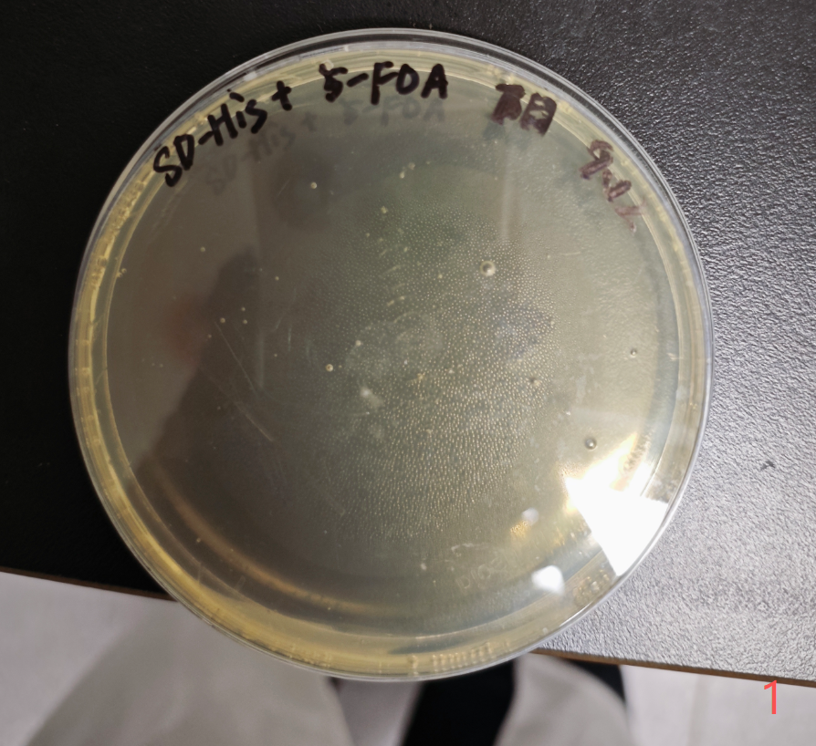
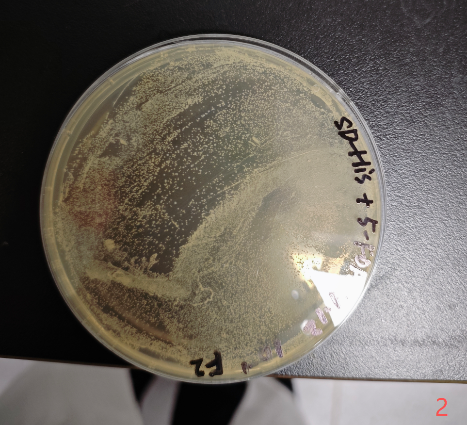
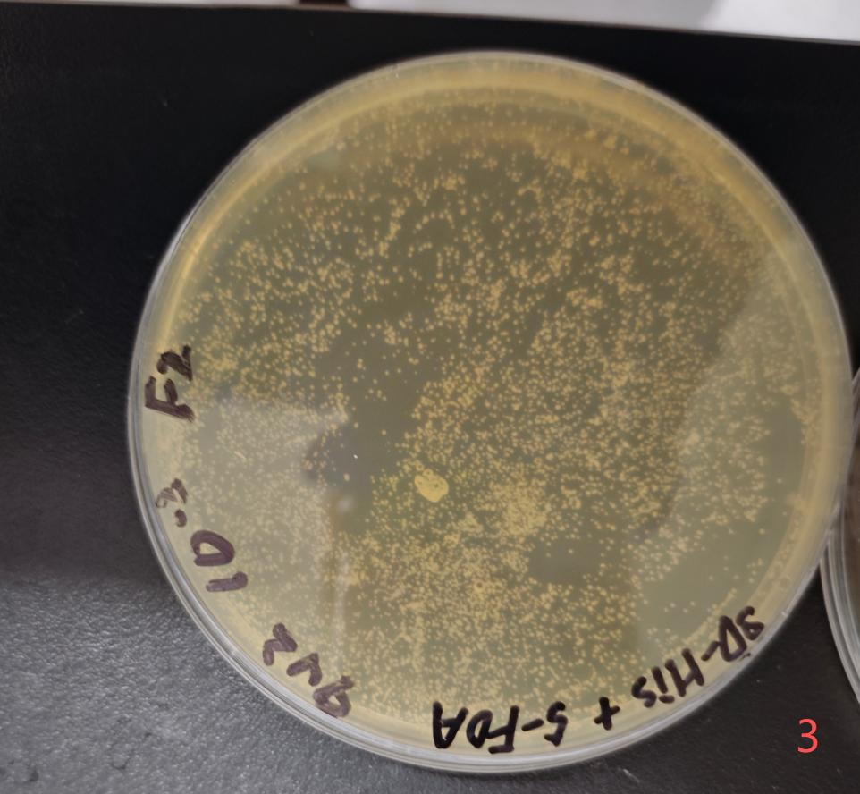
注：1号阴性对照；2号稀释至10-1的菌液浓度，3号稀释至10-2的菌液浓度
5-FOA反筛平板上长出大量菌落，其中10⁻¹稀释度下菌落过于密集，难以挑取单菌落，故从10⁻²稀释度平板上挑取10个单菌落，分别点种至SD-His平板与SD-His-Ura平板进行验证。若质粒已成功丢失，则菌株应仅能在SD-His平板上生长，而在SD-His-Ura平板上无法生长。
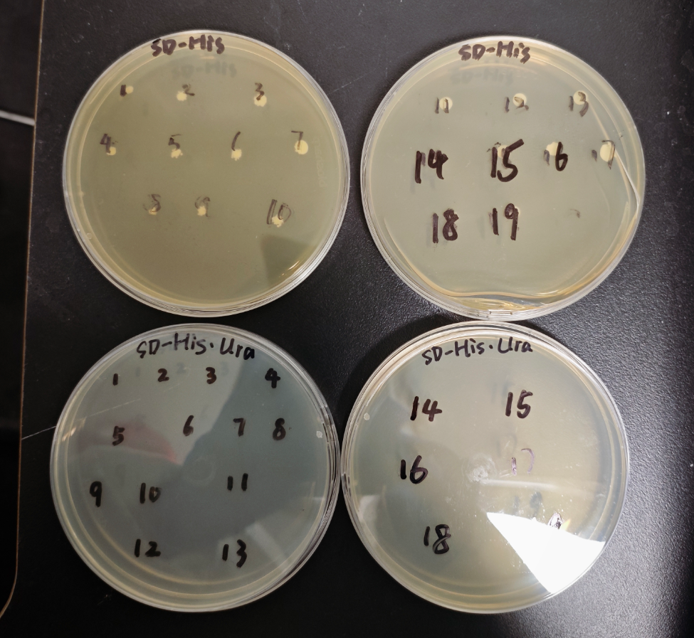
图中上排为SD-His平板，下排为SD-His-Ura平板。5-FOA反筛后挑取的单菌落点种结果显示，菌落均能在SD-His平板上正常生长，而在SD-His-Ura平板上不生长，表明质粒已成功丢失，5-FOA反筛成功。
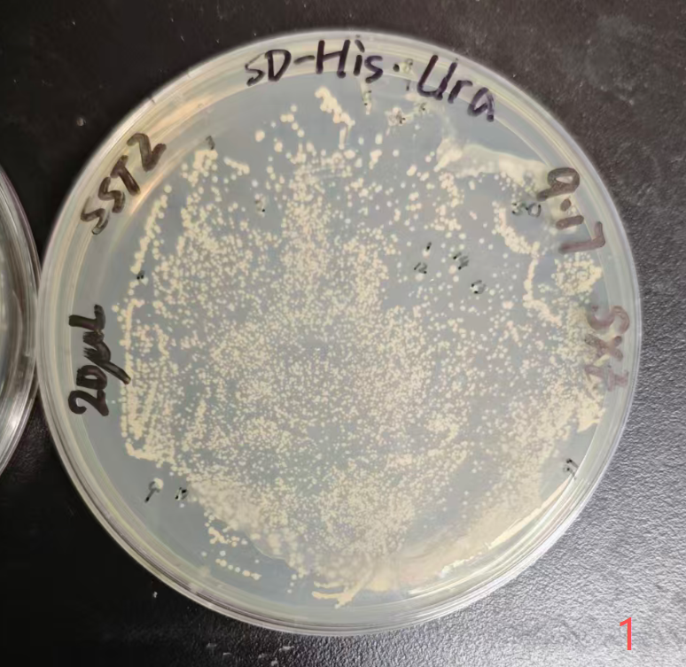
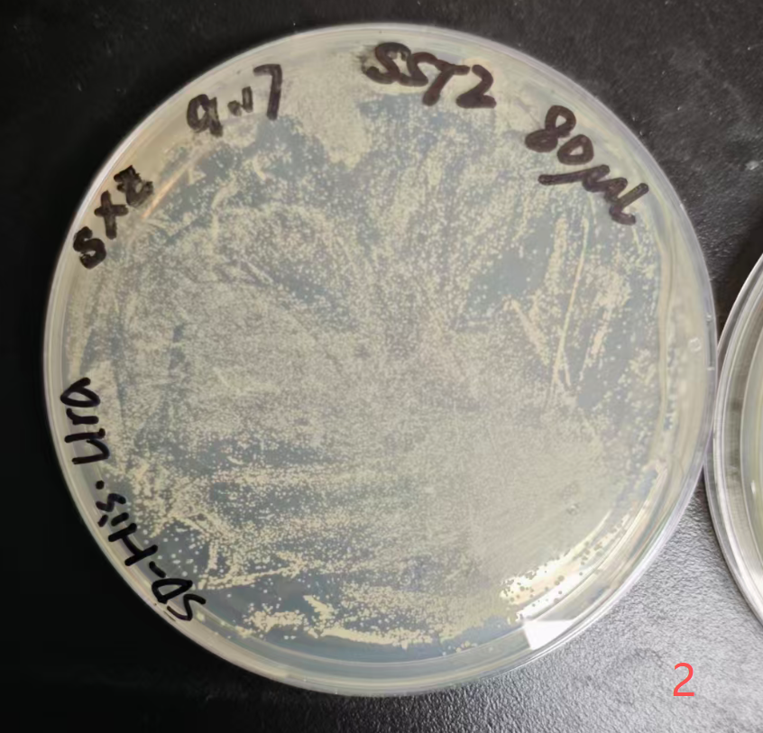
注：1号是涂布了20ul菌液；2号是涂布了80ul菌液
从图中可见，1号与2号平板均长出密集菌落，但1号平板（涂布20 μL菌液）中菌落分布相对分散，便于挑取单菌落，故从该平板中挑取15个单菌落进行后续验证实验。
二 修复模板扩增
2.1 方案一：以酿酒酵母基因组为模板，使用约50–60 bp的上游引物（较原序列缺失4个碱基，造成移码突变），下游引物不改序列、仅与上游Tm匹配，PCR扩增获得FAR1约611 bp、SST2约1303 bp的修复模板。
2.1.1 PCR扩增
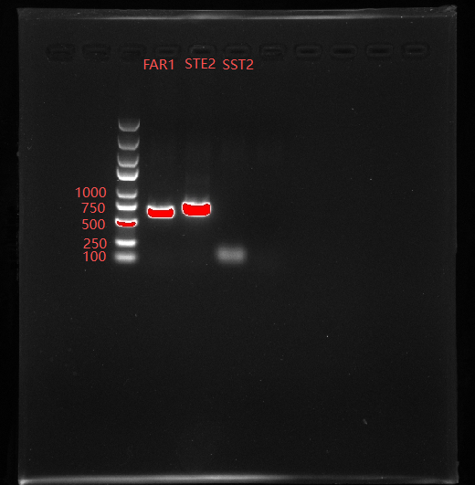
注：泳道2是扩增针对FAR1基因的修复模板，泳道4是扩增针对SST2基因的修复模板
FAR1修复模板（611 bp）扩增后可见清晰条带，且位置正确；而SST2修复模板（1303 bp）未扩增出条带。由于SST2修复模板片段较长，初步推测可能是PCR延伸时间不足所致。
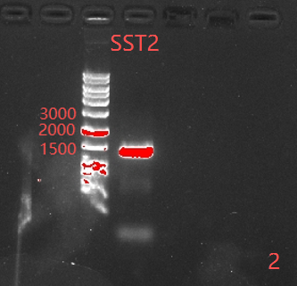
注：优化程序后进行SST2修复模板扩增，目标条带1303bp
从图中可以看出，条带位置正常且清晰。
2.2 方案二：与方案一思路基本一致，但在缺失4个碱基的基础上，另将NGG中的1个G突变为T或A，以避免向导序列二次识别并反复切割。同时将FAR1与SST2的修复模板均扩增至约1000 bp，左右各含约500 bp同源序列，以提高修复模板的结合效率。
2.2.1PCR扩增上臂及下臂
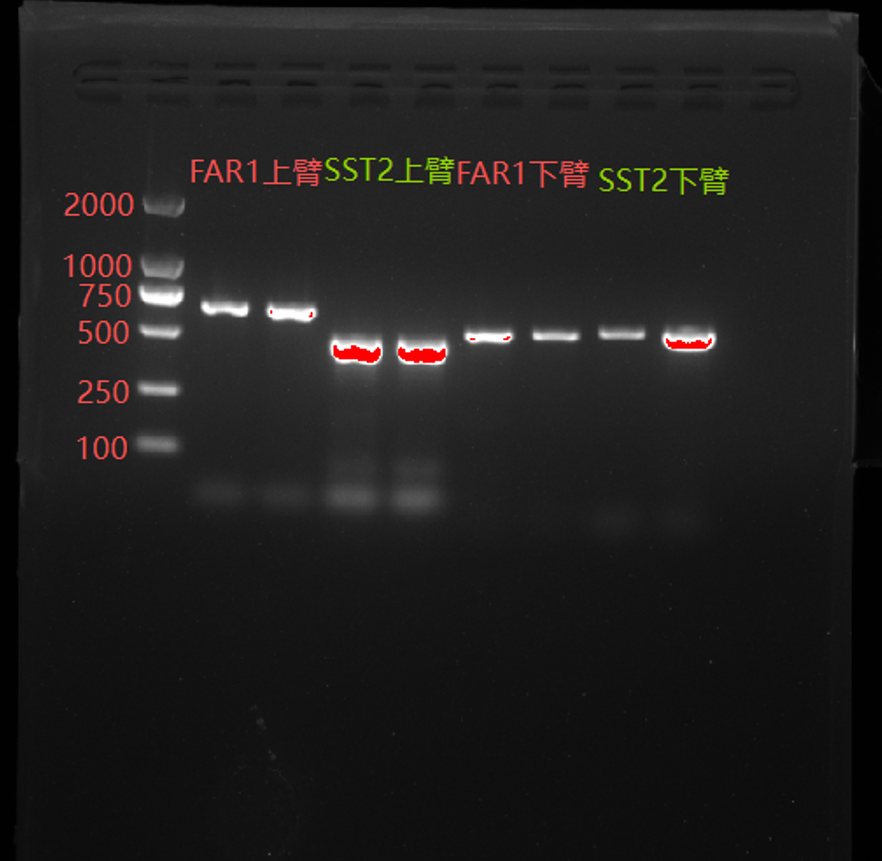
注：泳道2-3是FAR1上臂（658bp）；泳道4-5是SST2上臂（491bp）；泳道6-7是FAR1下臂（528bp）；泳道8-9是SST2下臂（549bp）
由于后续融合PCR对上下臂的纯度要求较高，因此采用切胶回收对目的片段进行纯化。
表3 FAR1和SST2的上、下臂PCR产物切胶回收的浓度及纯度
2.2.2融合PCR
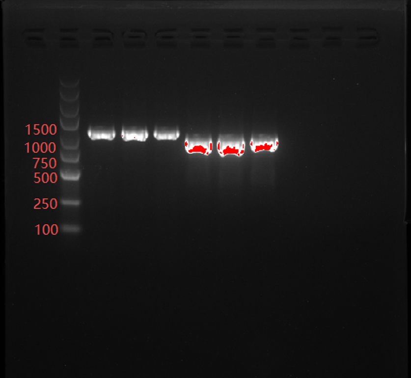
注：泳道2-4是FAR1修复模板（1146bp）；泳道5-7是SST2修复模板（993bp）
从电泳图可以看出，FAR1与SST2的修复模板扩增产物均呈现清晰、单一的目标条带，条带位置与预期大小一致，且无明显非特异性扩增或引物二聚体等杂带。整体扩增效果良好，表明修复模板已成功扩增，可直接进行后续的回收纯化。
2.2.3回收浓度及纯度
表4 直接纯化回收FAR1及SST2修复模板的浓度和纯度
三 分子验证
3.1 FAR1敲除株的PCR鉴定
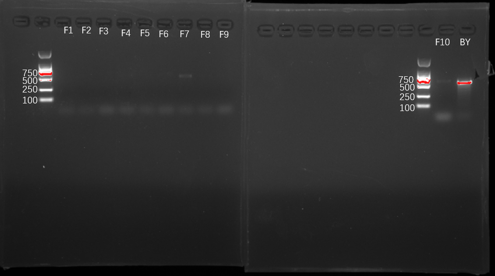
注：泳道2-11分别是敲除FAR1菌株F1-F10的PCR扩增条带，泳道12是BY4741（野生型）用作阳性对照
验证方法：敲除验证采用跨越敲除位点的上游引物：若基因组未发生敲除，引物可正常结合并扩增出条带；若4个碱基被成功敲除，引物因无法配对而无法扩增，以此区分野生型与敲除株。
从图中可以看出，除F10和F7出现微弱条带外，阳性对照BY4741正常扩增出目标条带，其余菌株均未扩增出条带，提示这些菌株可能已成功实现基因敲除。该结果也表明，此验证方法能够以较高概率筛选到成功敲除的菌株。不过，真正判断是否敲除还需要测序进一步确认。
3.2 SST2敲除株的PCR鉴定
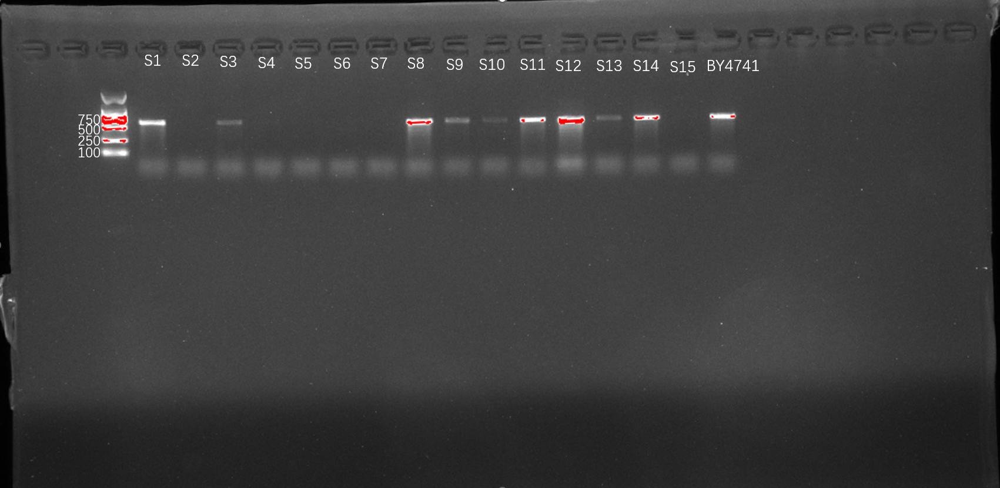
注：泳道2-16分别是敲除SST2菌株S1-S15的PCR扩增条带，泳道17是BY4741（野生型）用作阳性对照
验证方法与FAR1一致。
从图中可以看出，阳性对照BY4741正常扩增出目标条带；S2、S4、S5、S6、S7、S15未扩增出目标条带，提示这些菌株可能已成功实现基因敲除；其余菌株（S1、S3、S8、S9、S10、S11、S12、S13、S14）均扩增出条带，说明其未成功敲除。该结果表明，基于跨越敲除位点引物的PCR验证方法可有效区分野生型与敲除株，并从中筛选出候选敲除菌株。
3.3 FAR1敲除株的测序验证
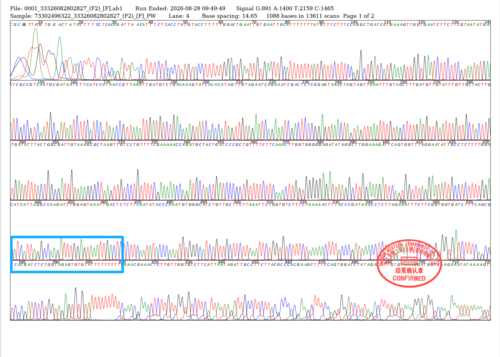
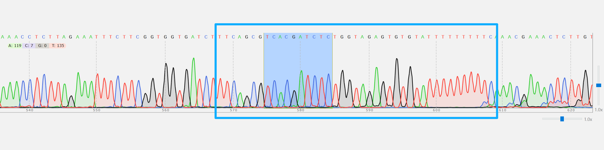
测序结果证实，目标位点已成功发生4个碱基缺失：原序列GCGTCACGATCTCCACT，敲除后变为GCGTCACGATCTC，测序峰图与预期序列完全一致，进一步确认该菌株为成功敲除株。
3.4 SST2敲除株的测序验证
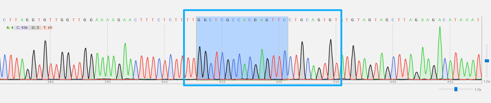
测序结果证实，SST2目标位点成功发生4个碱基缺失：原序列为GCCACGAGTTCTGTC，敲除后变为GCCACGAGTTC，测序峰图与预期序列一致，进一步确认该菌株为SST2成功敲除株。其测定方法与结果判读均与FAR1相同。
四 表型/功能验证
4.1 FAR1敲除株的表型/功能验证
4.1.1 生长曲线测定
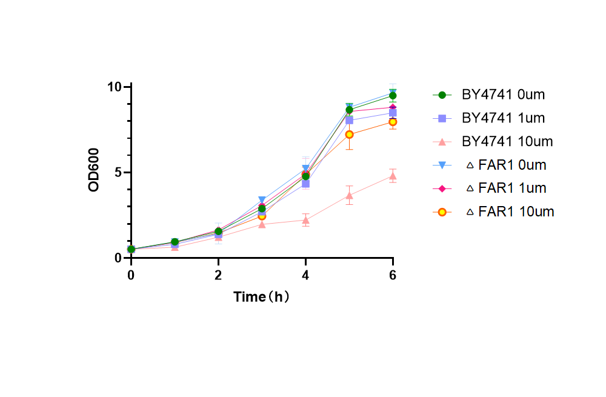
注：横坐标为培养时间（h），纵坐标为OD600。实验设置0μm、1μm、10μm三个a-factor浓度，每个浓度设3个平行样。BY4741为野生型对照，ΔFAR1为FAR1敲除株。
生长曲线结果显示，FAR1敲除株在0 μm、1 μm和10 μm a-factor浓度下的生长趋势基本一致，说明FAR1敲除后菌株生长不再受a-factor浓度影响；而野生型BY4741在10 μm a-factor条件下生长明显受抑制，与敲除株形成对比。该结果表明，FAR1可能是a-factor影响酵母生长的关键靶点，敲除FAR1可解除a-factor对生长的抑制作用。
4.1.2 荧光强度测定
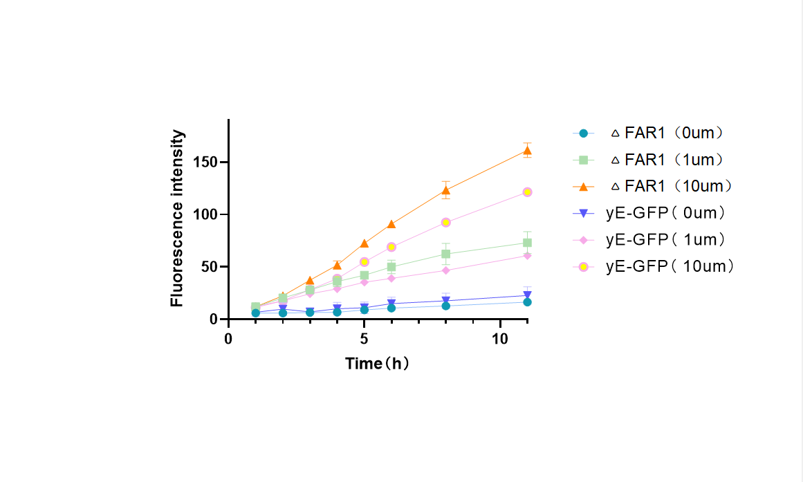
注：横坐标为培养时间（h），纵坐标为荧光强度。实验设置0 μm、1 μm、10 μm三个a-factor浓度，每组设3个平行样。yE-GFP为对照菌株，ΔFAR1为FAR1敲除株。
荧光强度曲线结果显示，FAR1敲除株在0μm a-factor条件下荧光强度较低，且随a-factor浓度升高而明显增强，10μm时达到最高；对照组yE-GFP同样表现出随a-factor浓度升高而增强的趋势，但整体荧光强度低于FAR1敲除株。该结果表明，FAR1敲除后菌株荧光表达仍受a-factor浓度调控，且在10μm a-factor条件下荧光强度最高。
4.2 SST2敲除株的功能验证
4.2.1 荧光强度测定
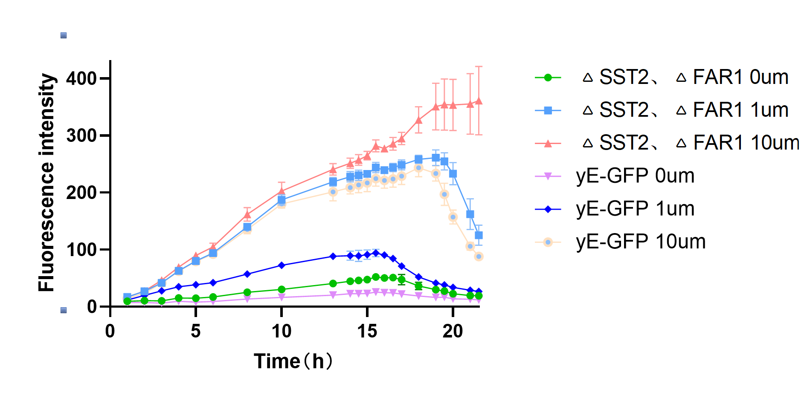
注：横坐标为培养时间（h），纵坐标为荧光强度。实验设置0μm、1μm、10μm三个a-factor浓度。yE-GFP为对照菌株，ΔSST2、ΔFAR1为SST2与FAR1双敲除株。
从图中可以得到两个信息：
1、低浓度灵敏度显著增强：在1μm及10μm a-factor条件下，双敲除株荧光强度高于对照，尤其是中间浓度1μm，双敲除菌株的荧光值远远高于对照，表明敲除降低了响应阈值，低浓度即可触发强信号。
2、高浓度响应增强且持续时间延长
最大浓度下，对照组约18 h达峰后下降，而双敲除株持续上升至22 h仍未达峰，且最大值已远超对照峰值，提示响应幅度放大且负反馈机制受损。
总体结论
FAR1与SST2双敲除增强了酵母对a-factor的荧光响应，表现为低浓度更敏感、高浓度更持久，提示敲除破坏了信号通路的负反馈调控，具备作为低浓度信号放大生物传感器元件的潜力。
PAGER门控系统的构建
材料来源：个人实验记录
日期：2026年4月-9月
1 概述
本模块围绕PAGER质粒开展大肠杆菌转化、质粒提取与验证，并进一步完成酵母转化、酵母质粒提取、菌落PCR与蛋白表达检测。实验目的在于获得可用于后续功能验证的PAGER酵母工程菌株，并通过酶切、PCR与免疫检测确认质粒与表达情况。
本模块先交代大肠杆菌与酵母转化的结果，再给出质粒提取、菌落PCR与蛋白表达的数据。
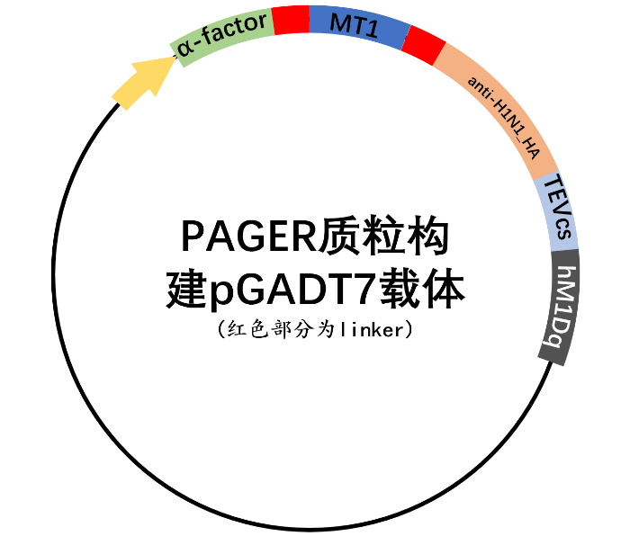
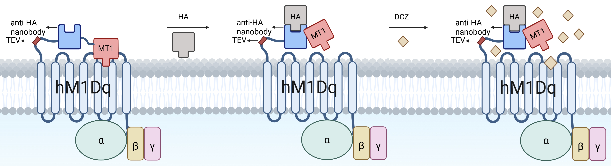
2 大肠杆菌转化与质粒提取验证
2.1 大肠杆菌转化
将PAGER质粒转化到Top10中，涂布于LB(Amp)平板，37℃倒置培养23 h。平板上可见散在单菌落，转化结果正常，可用于后续挑菌与质粒提取。
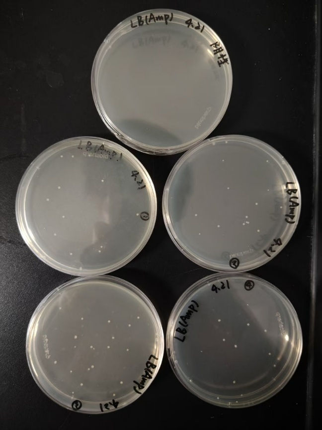
2.2 质粒提取与浓度纯度
提取质粒，共获得4个样品，浓度与纯度如下表。4个样品A260/A280均在1.89-1.93之间，纯度尚可，浓度满足后续酶切与转化需求。
表1 4.24提取质粒的浓度与纯度
2.3 双酶切验证
用BamHI和NdeI对提取质粒进行双酶切，酶切结果条带与预期的7939 bp和2063 bp相符合，说明质粒构建正确。
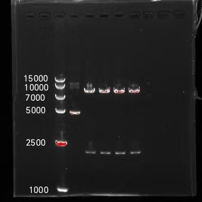
3 酵母转化与酵母质粒提取
3.1 酵母转化
4.29进行酵母转化，阴性和空白对照均未长出菌落，1号和3号染菌，其余两个平板生长良好。整体来看，转化组有阳性菌落出现，但部分平板存在污染，后续挑菌需避开染菌平板。
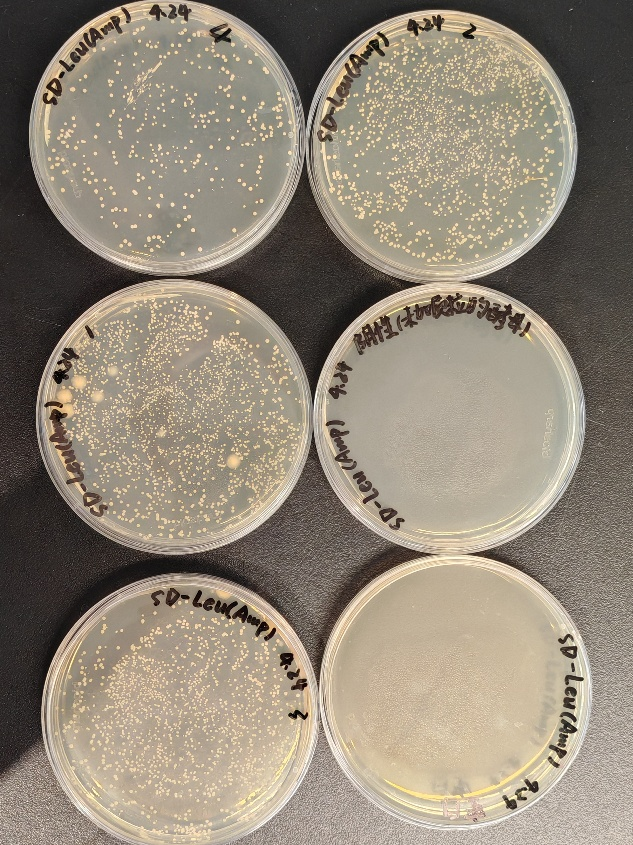
3.2 酵母质粒提取
4.30进行酵母质粒提取第一次实验，共获得两组样品，浓度与纯度如下。
表2 4.30 酵母质粒提取第一次实验
表3 5.3 酵母质粒提取第二次实验
5.3进行酵母质粒提取第二次实验，并做双酶切。电泳结果显示2、4、3号泳道均没有目的条带，阴性对照无条带，双酶切验证失败。
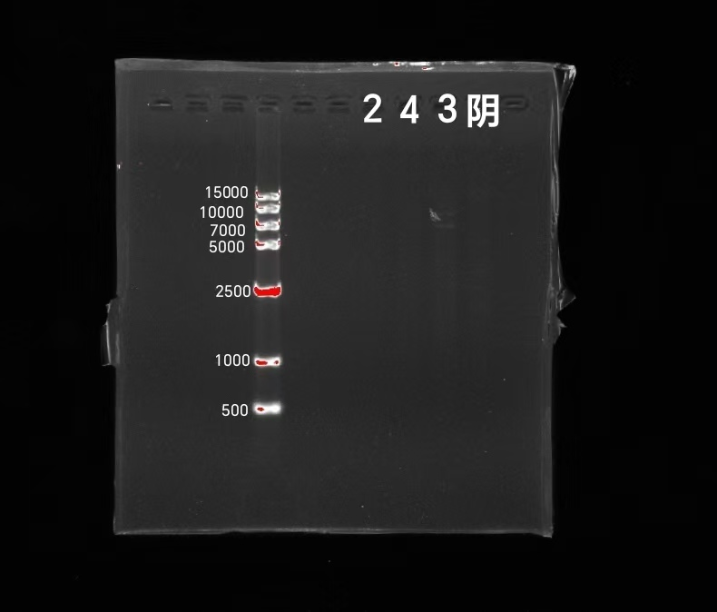
5.9进行第三次提取含PAGER质粒酵母的质粒，浓度与纯度如下。
表4 5.9 第三次提取含PAGER质粒酵母的质粒
5.11进行第四次提取含PAGER质粒酵母的质粒，浓度与纯度如下，酵母质粒提取结果均不理想，决定再次转化看看。
表5 5.11 第四次提取含PAGER质粒酵母的质粒
4 酵母第二次转化结果与菌落PCR
4.1 酵母转化结果
5.22 PAGER酵母转化结果显示，1-4号均转化成功；空白在转化时加入的是无菌水，阴性涂布的是BY4741，未长出菌落，结果理想。
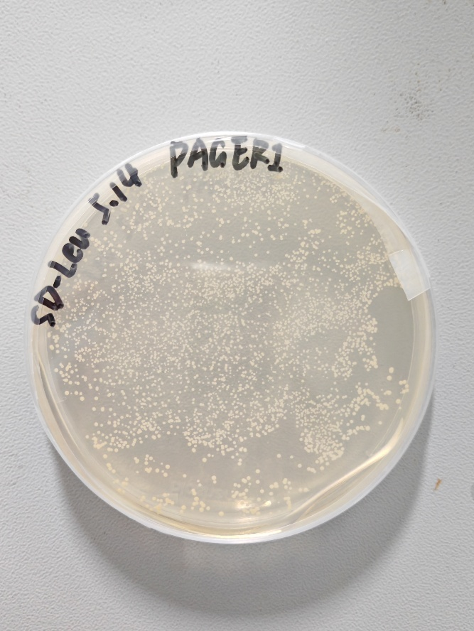
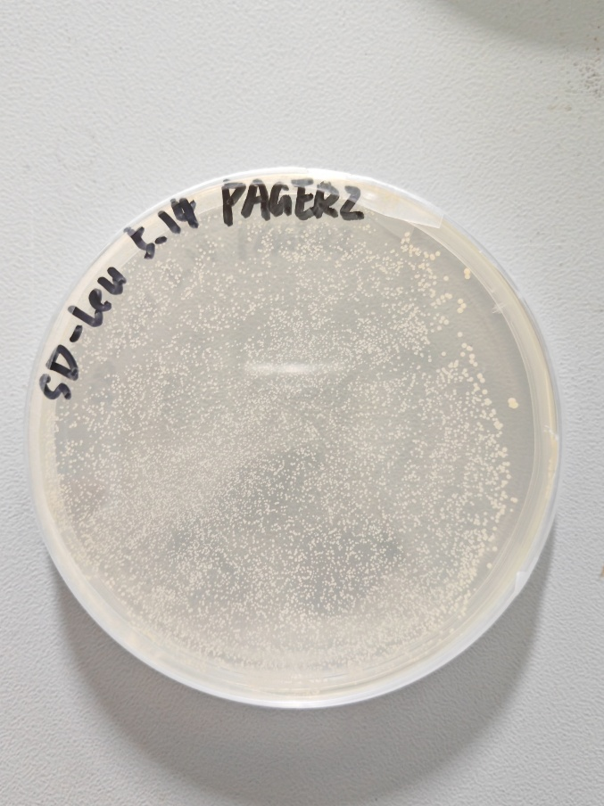
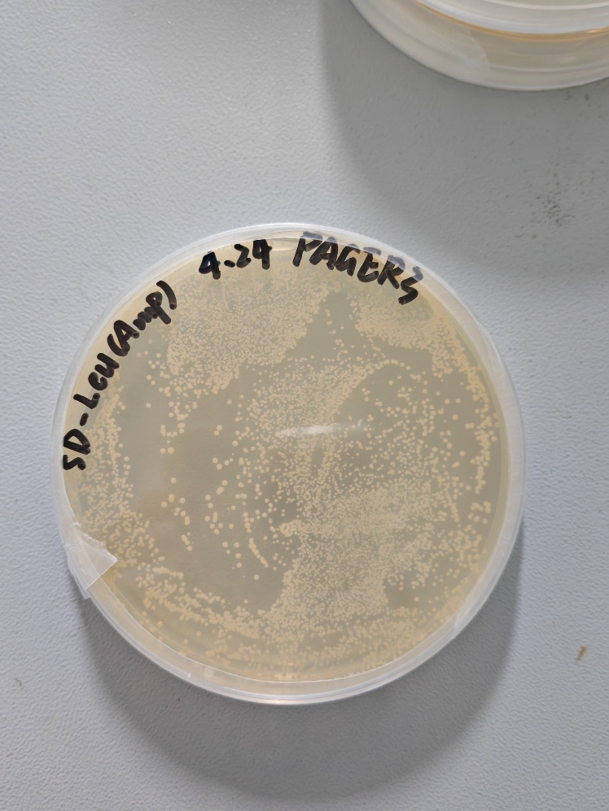
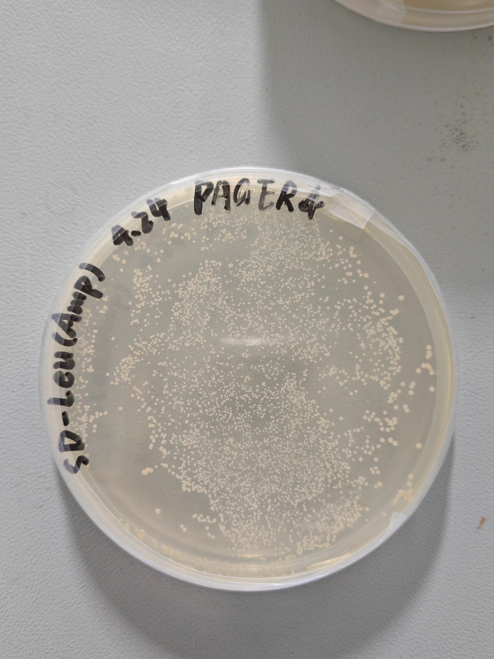
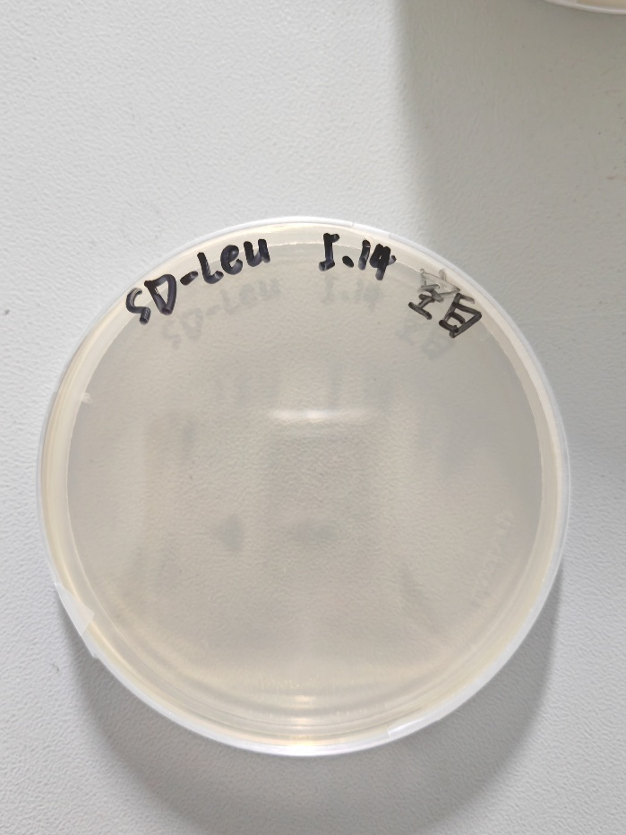
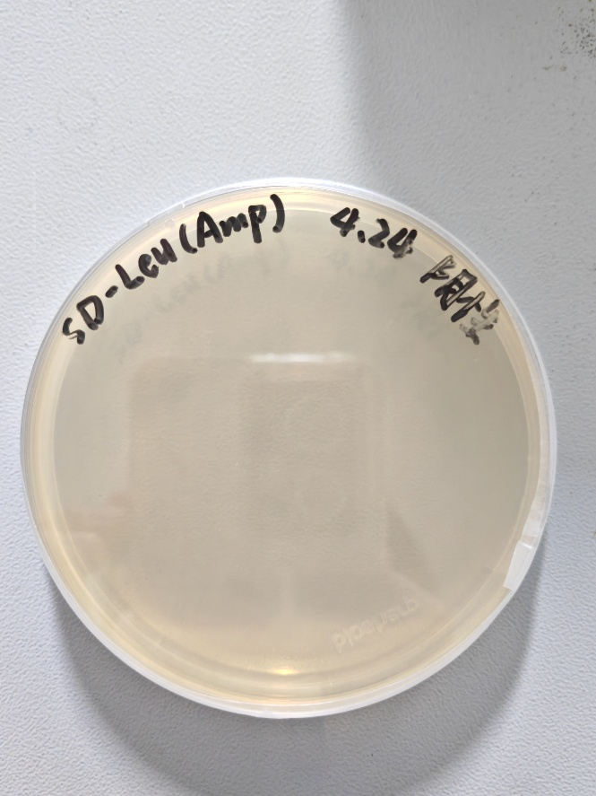
4.2 酵母菌落PCR
6.9进行酵母菌落PCR，从左到右依次为：3号菌液70℃、80℃、90℃破膜，4-1号菌液70℃、80℃、marker、90℃破膜，4-2号菌液、70℃、80℃、90℃破膜，4月24号大肠杆菌质粒1号，此次采用50 μL体系。电泳结果显示样品1-4在目标区域附近有条带，阴性1、阴性2无明显条带，说明菌落PCR可以初步鉴定阳性克隆，但破膜温度与模板质量对结果有影响。
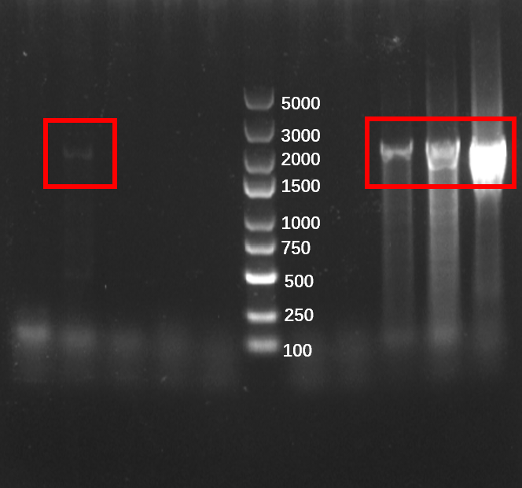
5 蛋白表达检测
7.16进行SDS-PAGE，预期条带应为60多kD，实际结果出现在40 kD附近。
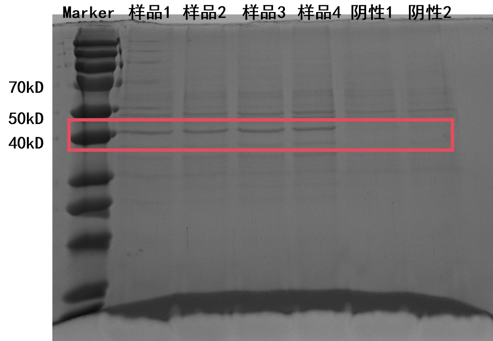
7.18进行WB，预期条带应为60多kD，实际结果同样出现在40 kD附近。两次结果一致，说明目标蛋白可能存在截短表达或降解，也可能与载体构建、标签位置或抗体识别有关，需进一步排查。
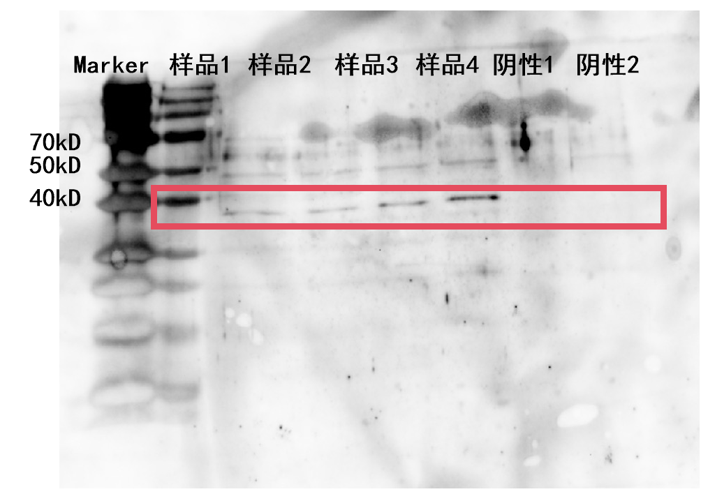
6 第二次构建
6.1 目的片段扩增
7.21使用新引物从新构建，删除目的片段与启动子之间的多余序列，进行第二次PCR与电泳验证，在10 kb条带附近出现条带，验证成功。
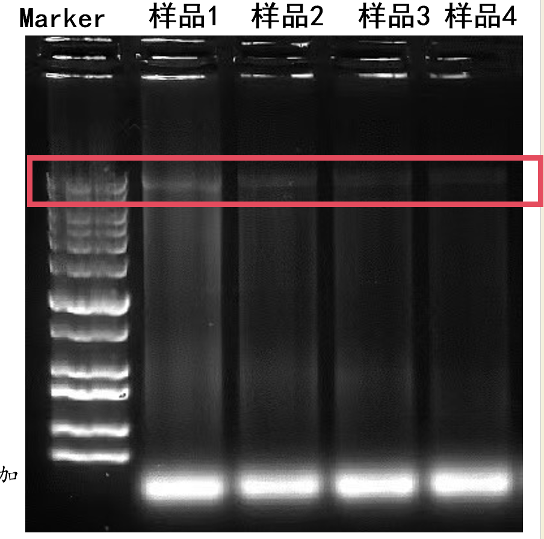
7.21进行胶回收与酵母转化，浓度偏低，但还是接着转入酵母中。
表6 7.21 胶回收结果
6.2 酵母转化
7.23转化平板结果显示，SD-Leu平板上长出单菌落，对照BY4741平板无明显菌落，转化组生长良好。
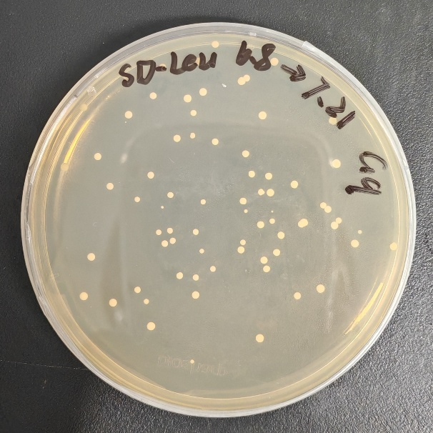
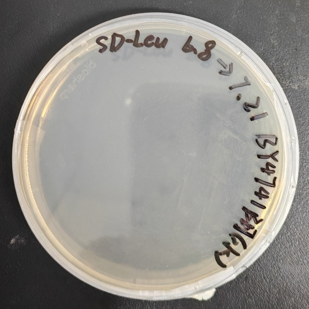
7.24进行第一次菌落PCR，2号为正确条带（689 bp），初步判定2号菌为阳性克隆。
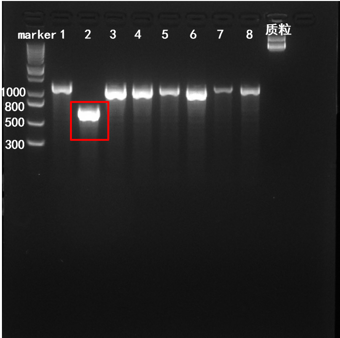
6.3 免疫荧光功能验证
7.29进行免疫检测，1号、2号为第一次构建的菌，3号、4号为第二次构建的菌，7号、8号为BY4741阴性对照，无明显荧光。结果说明第一次与第二次构建的菌株均未检测到明显目标信号，需结合测序与表达条件进一步确认。
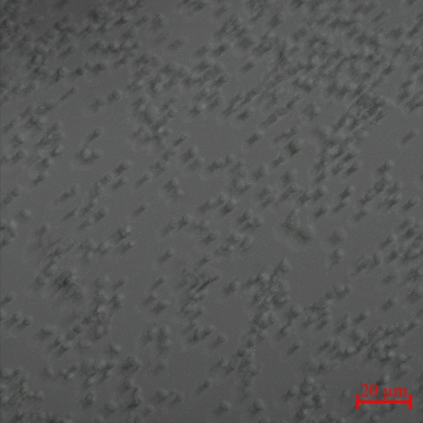

1号 2号
3号 4号
5号 6号
图14 7.29 免疫检测结果
7 第三次构建
由于第二次构建没有成功表达出蛋白，故作第三次构建，修改了Linker的序列。
7.1 目的片段扩增与一步克隆
8.14进行载体线性化PCR与胶回收，目的片段（762bp）线性化样品浓度为167.2 ng/μL，A260/280为1.86。电泳结果显示500和800 bp之间有目的条带，胶回收结果可用。
表7 8.14 目的片段胶回收结果
8.19进行载体线性化PCR与胶回收，载体线性化样品（8844bp）浓度为106.3 ng/μL，A260/280为1.89。电泳结果显示10000 bp附近有目的条带，胶回收结果可用。
表8 8.19 载体片段胶回收结果
8.23进行一步克隆与验证，目标条带为472 bp，一步克隆成功。
7.2 大肠杆菌转化与验证
8.25进行一步克隆转化菌落PCR验证，目标条带为472 bp，一步克隆成功。菌落PCR结果显示多数样品在目标位置有条带，说明转化子中目的片段已成功导入大肠杆菌。
8.26进行大肠杆菌质粒提取，浓度与纯度如下。
表9 8.26 大肠杆菌质粒提取结果
7.3 酵母转化与验证
8.25进行一步克隆产物和质粒酵母转化。
8.26进行酵母转化菌落PCR，目标条带为472 bp，酵母转化成功。
7.4 蛋白质表达与功能验证
8.30-8.31进行WB实验，60 kD附近有条带，但与阳性和阴性都有且杂带较多，待改进。说明目标蛋白有表达，但特异性不够理想，后续可通过优化抗体浓度、封闭条件与洗膜条件改善。
涵盖从DNA合成/提取 → 质粒构建 → 转化 → 筛选 → 表征 → 最终功能验证的全部过程
8.30-8.31 WB实验结果
7.5 功能验证
9.11-9.13进行功能验证，结果用酶标仪读取荧光值，TEV与HA两组信号均无明显结果。
9.11-9.13 功能验证结果
8 小结
本模块完成了PAGER质粒的大肠杆菌转化、质粒提取与双酶切验证，并进一步完成了酵母转化、酵母质粒提取、菌落PCR与蛋白表达检测。大肠杆菌转化与酶切结果符合预期；酵母转化可获得阳性菌落，但部分批次存在染菌与提取浓度偏低的问题；菌落PCR可初步筛选阳性克隆；SDS-PAGE与WB在40 kD附近出现条带，与预期60多kD不符，提示蛋白可能存在截短或降解；一步克隆与酵母转化菌落PCR在472 bp处获得目的条带，说明一步克隆与酵母转化成功。整体来看，质粒构建与转化体系基本建立，但蛋白表达与功能验证仍需进一步优化，也可能需要继续改进DNA序列。
GPA1 C 端人源化改造
材料来源：郑师姐的文档
日期：2026 年 9 月 21 日
1 概述
本模块对酿酒酵母 GPA1 基因 C 端的 5 个氨基酸进行人源化替换，并在其后引入终止密码子，依靠酵母自身的同源重组完成基因组定点编辑，URA3 作为筛选标记。改造的目标是让人源受体 hM1Dq 能够通过 Gpa1 接入酵母的 G 蛋白通路。
改造完成后，需要单独确认酵母原有的 α-factor 交配通路是否受影响。验证从三个层面展开：细胞形态、增殖能力、G 蛋白下游基因表达。
供体片段的制备设计了两条技术路线，本章先交代两条路线的取舍与结果，再给出改造菌株的确证与表型数据。
2 两条路线：把线性供体片段做出来
2.1 路线一：pRS426 载体二次线性化
载体初次 PCR 线性化以 pRS426 质粒为模板，使用引物 VecLinearf1 / VecLinearr1 扩增。产物主条带位置与理论片段大小 5601 bp 相吻合，同时出现多条非特异性杂带，无法直接用 PCR 产物纯化试剂盒回收，改用切胶回收。
表 1 初次线性化载体切胶回收后的浓度与纯度
第一轮一步无缝克隆按片段摩尔比 3:1 组装，随后用引物 ValHomUf / ValHomUr 做 PCR 验证。泳道 2–5 均扩增出约 640 bp 的目的条带，与理论预期一致；空白对照组无扩增条带。
组装产物转化大肠杆菌 TOP10 时遇到阻碍。平板 1 空白对照无菌落生长；平板 2 为转入 pRS426 空质粒的阳性对照，长出形态蓬松发散的异常菌落，判断为杂菌污染，该组无法作为可靠阳性参照。一步克隆产物按浓缩 10 倍、浓缩 5 倍、原液、25%、50%、75% 六种浓度梯度涂布，所有平板均无目标转化菌落长出。
考虑到体内转化筛选持续受阻，实验不再重复转化，跳过中间重组质粒的体内获得步骤，直接以一步克隆反应产物为模板开展载体二次 PCR 线性化。二次线性化产物条带位置与理论片段大小 6092 bp 相匹配，条带单一、无明显非特异性杂带，但亮度偏弱，凝胶背景存在弥散发白现象。
表 2 二次线性化载体切胶回收后的浓度与纯度
第二轮一步无缝克隆将下游同源臂与二次线性化骨架组装，验证 PCR 扩增出约 527 bp 的目的条带，与理论片片段大小相符。
以重组质粒为模板，使用引物 Donorf / Donorr 扩增得到完整线性供体片段。泳道 4 的产物条带大小为2289 bp，与理论片段大小吻合；空白对照组与空质粒对照组均无对应条带。
基于前期大肠杆菌转化多次失败的教训，同时考虑到多轮 PCR 存在累积错配的风险，实验调整顺序：暂不进行酿酒酵母转化，先将线性供体片段直接送测序。测序结果显示两处问题：一是未针对 2289 bp 的长片段设计多组测序引物，常规单引物有效读长仅 800–1000 bp，造成测序覆盖不全；二是片段 500 bp 位置之后出现大量碱基错配，推测是多轮 PCR 扩增累积引入的突变。据此判定该质粒 PCR 扩增制备供体片段的策略可行性较差，放弃该技术路线，转为采用融合 PCR 方案。
2.2 路线二：多片段融合 PCR
三段片段分别用 PCR 获取。URA3 表达盒的预实验设置 62 ℃、60 ℃、58 ℃ 三组退火温度，三组均可扩增出 1262 bp 的目的条带，但伴随较多非特异性杂带；正式实验改为切胶回收纯化。
表 3 URA3 表达盒切胶回收后的浓度与纯度
上下游同源臂从质粒 pUC57_上臂与 pUC57_下臂扩增，目的条带分别为 558 bp 与 540 bp，空白对照均无扩增条带。产物同样伴随非特异性杂带，正式实验切胶回收。
表 4 上下游同源臂切胶回收后的浓度与纯度
融合 PCR 的预实验对片段做了排列组合。各片段单独扩增与两两组合均未出现明显融合产物条带，仅三片段共同融合组扩增出清晰的目的条带，条带位置与完整供体片段理论大小基本相符，说明三片段融合拼接策略可行。
2.3 两条路线对照
表 5 两条技术路线的结果对照
3 改造菌株的确证
融合 PCR 产物转化酿酒酵母后，四块实验组平板均长出大小较为均一的单菌落。其中 2 号平板因培养基厚度不足发生塌陷，存在污染风险，弃用，后续从 3–5 号平板挑取单菌落。
挑取 24 个菌落先做溶解点板留存扩增，过夜培养后进行菌落 PCR 初筛。点板留存结果显示 2、4、9 号过夜培养没有长出，判定为假阳性，不参与后续筛选，剩余 21 株进入鉴定。
使用引物 T1_f / T1_r 对剩余 21 株转化子做第一轮菌落 PCR。1、3、5、6、8、10、11、12、13、14、17、18、20、21、22、23、24 号共 17 株在 558 bp 目标位置出现清晰目的条带，初步判定为潜在阳性克隆；其余样本无对应特异性条带，视为阴性。
考虑到单对引物的菌落 PCR 存在假阳性风险，换用引物 T2_f / T2_r 对上述 17 株做第二轮复核。全部待测样本均在 849 bp 目标位置扩增出清晰目的条带，无明显非特异性杂带，候选阳性得到加固。
从候选中随机选取 5、11、12、14、17、21 号共 6 株送测序，与理论参考序列比对。结果显示 6 株的大部分序列均与理论序列匹配；5、11、14、21 号在人源化位点下游附近存在不同程度的碱基错误，序列不符合预期；12 号与 17 号的人源化改造位点及周边序列与理论设计序列完全一致，GPA1 基因 C 末端 5 个氨基酸人源化改造成功。后续表型与功能验证优先选用这两株工程菌。
4 响应与表达
4.1 形态响应
选取测序验证正确的 12 号、17 号工程菌株，设置 0 μM、1 μM、10 μM 三个 α-factor 浓度梯度诱导，诱导培养 3 小时后镜检，重点观察交配突起（shmoo）的生成情况。结果显示 0 μM 与 1 μM 条件下两株菌均未观察到 shmoo；10 μM 高浓度处理组仅有极少量细胞出现 shmoo。
4.2 生长响应
选取野生型 BY4741、12 号与 17 号菌株测定生长曲线，设置 0 μM、1 μM、10 μM 三个 α-factor 浓度，初始 OD600 调至 0.4 后开始诱导，每小时测定一次，连续检测 10 小时。
野生型 BY4741 在 0 μM 与 1 μM 条件下生长趋势接近，10 μM 高浓度处理组生长受到明显抑制，OD600 整体低于另外两组。这是高浓度 α-factor 激活 G 蛋白信号通路、引发细胞周期阻滞的正常表现。12 号与 17 号在三种浓度下的生长曲线无明显差异，高浓度 α-factor 并未造成显著的生长抑制。
4.3 下游基因表达
向对照菌株与人源化改造菌株转入荧光报告质粒，设置 0 μM、0.375 μM、0.75 μM、1.5 μM、3 μM、6 μM、12 μM、24 μM 共 8 个 α-factor 浓度梯度开展诱导，定时取样测定荧光强度，以相对荧光单位RFU 记录通路激活随时间的动态变化。
在全部诱导浓度下，对照组的荧光强度均随诱导时间延长持续升高；随 α-factor 浓度提升，对照组能够达到的最大荧光信号同步上升，体现出典型的浓度-效应关系。改造菌株在所有浓度梯度下荧光整体水平低于对照组，荧光仅在前期小幅上升，到达峰值之后便开始下降；即使在 24 μM 最高浓度刺激下，仍无法产生与对照组相当的荧光响应。0 μM 无诱导的空白组中，两组均存在本底荧光，改造菌株本底信号同样低于对照组。
本实验直接检测体系总荧光信号，未采用 OD600 进行归一化处理，实验结果会受到菌株生长差异的干扰。
5 小结
本模块利用酵母内源同源重组完成了 GPA1 基因 C 端 5 个氨基酸的人源化定点改造，从 24 个转化子中确证获得 12 号、17 号两株序列完全符合设计的工程菌株。
以 α-factor 作为交配信号分子开展多浓度梯度诱导后，形态、生长、下游通路三个层面的结果方向一致：改造菌株对 α-factor 的形态响应不明显，高浓度诱导下仅极少量细胞产生交配突起；野生型受高浓度α-factor 刺激会发生细胞周期阻滞、生长受抑，而改造菌株在不同诱导浓度下生长无明显差异；荧光报告实验进一步显示改造菌株下游信号通路激活水平低于对照组。
综合以上结果，GPA1 的 C 端是酵母感知 α-factor、完整激活交配信号通路所需要的区段。
FUS1 启动子驱动 yEGFP 报告基因表达体系的构建实验结果报告
α-因子（α-factor）是酿酒酵母分泌的交配信息素，其结合受体 Ste2 后经 MAPK 级联磷酸化激活下游 FUS1 等交配应答基因的转录，构成酵母交配信息素信号通路的核心。该通路响应迅速、诱导剂量可控，是构建可诱导表达体系的经典元件。为建立 α-因子可诱导的荧光报告系统，本研究以 pESC-HIS-yEGFP（以 BamH I 与 EcoR I 双酶切将 yEGFP 片段定向连接至 pESC-HIS 所得）为载体骨架，利用 Gibson 无缝克隆将 FUS1 启动子片段连接至 yEGFP 编码序列上游，转化 BY4741 酿酒酵母，经营养缺陷型筛选与分子鉴定获得阳性重组子，并考察梯度浓度 α-因子诱导下菌株生长与 yEGFP 荧光响应。现将体系构建各步骤的实验结果汇总如下。
一、目的片段与线性化载体的制备
（一）带同源臂的 FUS1 启动子片段扩增
以 FUS1 启动子序列为模板设计引物，并在正反引物 5′ 端各引入 20 bp 与线性化载体末端重叠的同源臂，PCR 扩增 FUS1 启动子片段。电泳结果如图 1 所示：左侧 Marker 标注 750 bp 与 500 bp 档位；泳道 1～4 的扩增产物均在约 475 bp 处呈现单一、明亮且迁移整齐的条带，与预期大小相符，条带下方未见引物二聚体、上方无非特异性扩增条带，扩增特异性良好。PCR 产物经纯化后用于后续 Gibson 反应。
（二）pESC-HIS-yEGFP 载体的线性化
pESC-HIS-yEGFP 质粒以反向 PCR 方式实现载体线性化，使线性化产物两端携带可与 FUS1 启动子同源臂相互重叠的序列，从而为 Gibson 重组提供同源区。电泳结果如图 2 所示：左侧 Marker 标注 10 kb、8 kb、6 kb 档位，泳道 1～4均在 6 kb 与 8 kb 之间（略高于 6 kb）均显示一条清晰、明亮的单一主条带，与右侧标注的约 6746 bp 高度一致，但条带上方有轻微拖尾。线性化产物经纯化后备用。
二、Gibson 无缝克隆与酵母转化筛选
（一）Gibson 一步无缝克隆
将纯化后的 FUS1 启动子片段与线性化载体按适宜片段/载体摩尔比混合，加入 Gibson Assembly Mix 一步反应。在 20 bp 同源臂介导下，经外切酶暴露单链、同源退火、聚合酶补缺、连接酶封闭切口，将 FUS1 启动子无缝替换至 yEGFP 编码序列上游，构建获得可诱导表达质粒 pESC-HIS-P(FUS1)-yEGFP。由于采用无缝连接，启动子与 yEGFP 起始密码子之间的间距与读码框保持不变。
（二）BY4741 转化与营养缺陷型筛选
将连接产物转化 BY4741 感受态细胞，涂布于 SD-His 营养缺陷型筛选平板。平板继续培养约 6 天后，三个平板（图 3）上仅长出数个单菌落：菌落呈白色点状、边缘清晰、形态规则，数量极少且生长缓慢。菌落稀少与转化效率偏低及 SD-His 较强筛选压力（仅重组子在 HIS 缺陷背景下得以存活）相符，属营养缺陷筛选体系的预期结果。
三、阳性重组子的分子鉴定
（一）菌落 PCR 验证
从筛选平板挑取单菌落直接裂解作模板进行菌落 PCR 验证，电泳结果如图 4 所示：共 5 条泳道，最左侧为 DNA Marker（可见 2 kb、1 kb、750 bp 档位），泳道 1～4 为待验证菌落。其中泳道 1、3、4 条带位于 750 bp～1 kb 之间、泳道 4 位于 750 bp 附近，均小于 1152 bp，属非特异性或假阳性扩增。；泳道 2 在 1 kb 与 2 kb 之间出现一条明显亮带，大小约 1152 bp（图中红框标注），与 FUS1 启动子—yEGFP 接头扩增的预期产物相符，判定为阳性。据此选取条带正确的样品 2 送 Sanger 测序确认。
（二）测序结果比对
对验证正确的单菌落（样品 2）目的片段进行测序，并将测序峰图与预期序列比对，结果如图 5 所示。所选比对区段为第 8～1066 位、共 1059 个碱基（读段总长 1126 碱基），比对图中蓝色高亮区表示序列匹配一致：中间区段序列与预期完全一致，确认 FUS1 启动子已正确无缝连接于 yEGFP 上游、读码框未发生移码；读段首、尾各存在少量差异或信号杂乱，系测序读长末端信号衰减及比对边界所致，属正常现象，不影响对连接正确性的判定。
四、α-因子梯度诱导表达分析
对鉴定正确的阳性菌株以梯度浓度 α-因子（0、0.375、0.75、1.5、3、6、12、24 μM，共 8 组）进行诱导，同步监测菌体生长（OD600）与 yEGFP 荧光强度，以考察 P(FUS1) 启动子的诱导响应特性。
（一）菌体生长（OD600）分析
OD600 随诱导时间的变化如图 6 所示。各组 OD600 均随时间推移呈上升趋势；0 μM 对照组生长最快、终点 OD600 最高，随 α-因子浓度升高菌体生长受到明显抑制，浓度 ≥1.5 μM 时抑制尤为显著，最高浓度 24 μM 组终点 OD600 最低，数据带误差棒。该结果与 α-因子激活交配信号通路后引起细胞周期停滞（G1 arrest）的预期一致，表明外源 α-因子有效激活了内源 P(FUS1) 通路并对生长产生浓度依赖性抑制。
（二）yEGFP 荧光强度分析
yEGFP 荧光强度随诱导时间（0～16 h）的变化如图 7 所示。0 μM 对照组荧光处于低水平且保持平稳；随 α-因子浓度升高，各组荧光强度随时间延长而上升，且浓度越高、上升越快、终点荧光值越高，呈现明显的剂量依赖与时间依赖诱导效应。上述结果证明 FUS1 启动子可在 α-因子诱导下驱动下游 yEGFP 表达，且诱导强度随 α-因子浓度递增而增强。
五、总结
本研究以带 20 bp 同源臂的 PCR 扩增 FUS1 启动子、反向 PCR 线性化 pESC-HIS-yEGFP（约 6746 bp），经 Gibson 一步无缝克隆将 FUS1 启动子连接至 yEGFP 上游并转化 BY4741，于 SD-His 缺陷平板筛选获得阳性重组子。菌落 PCR 获得 1152 bp 正确条带、测序比对中间序列完全一致，证实报告载体构建正确。α-因子梯度诱导实验中，yEGFP 荧光强度呈剂量—时间依赖性上升，同时伴随浓度依赖的细胞生长抑制，二者变化方向一致，符合交配信息素信号通路被激活的预期。综上，FUS1 启动子驱动 yEGFP 的 α-因子可诱导报告表达体系构建成功，可作为酵母交配信息素信号通路研究的荧光报告系统。
五、综合讨论
四节结果各自成立，合起来看这条检测链目前的实测状态。
底盘这一节给出两株敲除菌（FAR1 与 SST2 均经测序确认），并观察到敲除后菌株对 α-factor 的荧光响应增强、生长不再受高浓度 α-factor 抑制。受体这一节把克隆链走通（第三次构建：一步克隆 472 bp → 菌落 PCR 472 bp → 酵母转化成功），蛋白层在 60 kD 附近有条带、杂带较多，功能验证给出 96 孔读板图。接口这一节得到 12 号、17 号两株序列一致的工程菌，并测到改造后细胞对 α-factor 的形态、生长、下游表达三层响应都减弱——这是改造本身的后果，需要讲清楚，因为项目最终要用人源受体驱动通路，而不是靠 α-factor。报告体系这一节完成构建（菌落 PCR 1152 bp、测序比对一致），并拿到剂量-时间依赖的荧光响应。
把四段并起来看：识别端（底盘与接口）与输出端（报告体系）各自拿到了实测数据，受体层完成了克隆链与表达检测。四条线的方向清楚：敲除放大对 α-factor 的响应，人源化改造改变了 α-factor 响应，FUS1-yEGFP 报告体系呈剂量-时间依赖。
各节使用各自的 α-factor 浓度体系：底盘为 0 / 1 / 10 μM 三档，接口与报告为八档梯度；数值按各自体系呈现。